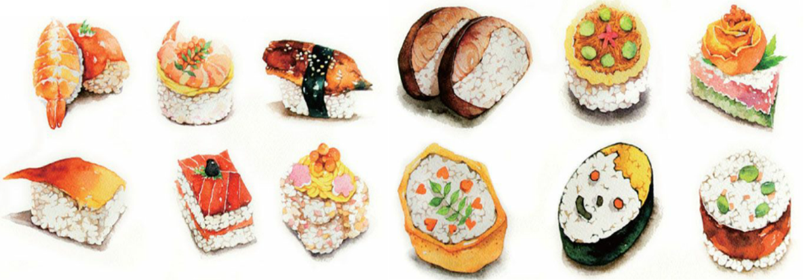

2013年12月4日，联合国教科文组织正式把日本料理认定为世界“非物质文化遗产”。该组织认定的世界遗产一共有3种，分别是主要以保护建筑物、遗迹和自然风景为目的的“世界遗产”，以保护绘画和纸质文献资料为目的的“世界记忆遗产”，以及“非物质文化遗产”。日本料理成功登上“非物质文化遗产”名录，说明日本料理所代表的日本饮食文化受到了世界范围内的认可，将会受到全人类的共同保护；同时也说明日本料理确实是日本文化的一个重要部分。

日本料理凭借四大法宝打动了评委的心，日本政府在为日本料理申遗时，列出的也是以下这四点理由。
日本国土南北狭长，拥有海岸、山地和田野等多样的地理环境，食材来源非常丰富。日本料理充分利用了各种食材，并且尽量追求食物本身的味道，与之相适应的料理技法就是日本料理的本质。很多日本大厨都说过，真正的日本料理只能在日本吃到，这就是因为日本料理追求食材新鲜性和本味的特性。日本料理的概念里认为食物本身的味道才是人间至美，而这种新鲜的口感只能在极短的时间内保存，食材一旦放久了，这种鲜美就会消失。如果没有了食材本身的鲜美，就不得不用复杂的方法来加入其他的味道，这就是中国人常说的入味，而在日本料理的理想状态里，是不存在也不需要入味的——食物本身的鲜美是天生的，只要尽力不去破坏它就可以了。正宗的日本料理食材只能在日本列岛品尝到，海外的日本料理虽然制作方法相同，终究缺少了最核心的内容，不过是得其形而失其神。
传统日本料理的组合是三菜一汤，既不是奢侈的大吃大喝，又能保证全面的营养，数量和营养都刚刚好。而且日本料理善于利用从海带、鲣鱼等自然材料中提取的汤汁进行调味，这些天然的调味品代替了动物油脂，使日本料理的脂肪含量很低，十分有益于健康，这也是日本人长寿的一个重要原因。
日本料理的三菜一汤，食材基本都来自蔬菜和海产品。在没有塑料大棚和海鲜养殖的古代，无论是蔬菜还是海鲜，都有它们各自的成熟季节，所以日本料理的季节性非常明显，正宗的日本料理能从食材上判断出当下的季节。食材之外，日本料理的餐具也有鲜明的季节感。春天碗碟上会有樱花的图案，秋天餐具上会出现红叶，还会采摘当下盛开的鲜花作为装饰，为食物增色。樱花瓣筷枕、绿叶玻璃盘、红叶瓷碟、贝壳陶碗、漆制重箱等各种栩栩如生的餐具呈现出不同的季节，把日本料理衬托得更有格调。
顺便说一下，日本人对餐具的重视远超过中国人的想象。中国人在家里对餐具算是比较随意的，讲究点儿的家庭可能会买一整套餐具，一般的家庭很少会去追求碗和盘子的配套，而餐具一般都是共用的，即使各人有自己专属的杯子，锅碗瓢盆也没有分得太清。不过日本家庭可不是这样，丈夫和妻子都有各自专属的饭碗、盘子和筷子。比如妻子的餐具在尺寸上比丈夫的小，花色、样式也都不一样，这并没有男尊女卑的含义，而是通过餐具表现男刚女柔、男女有别，日本人也常常选择质地相同、花色不同的成对餐具赠送给新婚夫妇，这在日本算是流传已久的习惯和文化了。
日本人也跟中国人一样过年，只不过他们没有采用农历，而是把公历的12月31日当作除夕，把元旦当成正月初一。岁末年初的日本，同样让吃货们魂牵梦绕。日语里把正月吃的饭菜叫作“お節料理”，就是过节的食物，非常丰盛。这些食物会被放在多层的漆器盒子（重箱）里，象征着福分层层叠叠、源源不断。日本人新年还要喝“御屠苏”，这原来是一种药酒，现在基本上都用清酒代替了。日本人过年时也吃年糕，在新年的早晨，人们吃的第一顿饭就是年糕汤，这是传承了日本各地风俗的一道家庭料理，类似中国的饺子，各家的做法和口味都不大相同。大致来讲，可以分为“关东式”和“关西式”两种，“关东式”是烤长方形年糕高汤，“关西式”则为圆年糕黄酱汤。到了正月初七，日本人要还喝七草粥，这是用春天里的7种植物和米饭一起熬成的粥。正月十一日是“开镜节”，这一天人们会把提前挂在家里的“镜饼”拿下来，然后打碎做成年糕汤或红豆汤。镜饼是过年必不可少的一种装饰品，是把米饭磨成粉后做成的椭圆形年糕，古代日本人相信稻米之神就在镜饼之中，吃了它就能获得神灵的庇护。除了过年，日本还有各种各样的“祭り”，各种节日也有专属食品。总之，食物和传统节日的讲究很复杂。